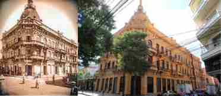

Construida en la segunda mitad del siglo XIX, la creación de este bello palacete está atribuida al constructor italiano Carlos Pozzi.
Su dueño original, el inmigrante español don Juan Alegre, solicitó que este proyecto cumpla una doble función, en la planta alta estaría su residencia y en la planta baja establecería en 1.903 su casa de modas y novedades "El Paraíso". En 1940, a la muerte de su propietario, en la planta alta se establece el Hotel Majestic.
A fines de la década del ‘40, fue alquilado al Estado paraguayo para sede del Ministerio de Economía (creado en 1933, hoy Ministerio de Hacienda).
Como consecuencia de la crisis mundial del año 1929, muchos edificios quedaron en poder del Estado Paraguayo como este edificio (año 1950) que, luego pasó a ser destinado para el Ministerio de Hacienda, realizándose refacciones internas. En el año 1965 se realizaron tareas de mantenimiento y se suprimió la magnífica escalera que fue reemplazada por ascensores.
El ex Palacio Alegre, Hoy sede del Ministerio de Hacienda, se constituye un testimonio del auge económico del Paraguay de principios de siglo pasado.
Desde el punto de vista arquitectónico este Palacete urbano es considerado de estilo Neoclásico, estilo que llega de Europa de la mano de profesionales arquitectos y constructores españoles, italianos, y de otras nacionalidades en general.
Podemos observar en lo más alto del edificio una importante y elegante cúpula de base circular con linterna (tubo dispuesto como remate sobre dicha cúpula, que, mediante huecos permite la iluminación y la ventilación del espacio interior del edificio). Esta cúpula fue la cuarta construida en la capital asuncena después de las cúpulas del Oratorio y Panteón Nacional, el de La Administración Paraguaya de Alcoholes (hoy CAPASA) y el de la Iglesia de la Encarnación.
En el año 2014 se llevaron adelante trabajos para la recuperación de la decoración original del fresco (mural) que se encuentra en el hall de acceso principal sobre la calle Chile. Posee relieves elaborados por el catalán Jaime Miguel Moray. El técnico Restaurador, Francisco Garay Santos, explicó sobre los trabajos: "la tarea de restauración implicó la aplicación de una técnica de carácter reversible, que significa, que, la labor reciente puede ser revisada y actualizada conforme a nuevas técnicas y a la tecnología que se emplea en este tipo de intervenciones"